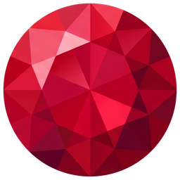

Grimoire
メモ・リンク・画像をカードにして、ボードに並べるメモアプリ
できること
- Markdown のメモ、Web ページや動画のリンク、画像・動画をカードとしてボードに置く
- カードをドラッグで並べ替え、グループにまとめ、ボードを何枚でも作る
- データは手元の PC に保存。オフラインでも使える
- Google ドライブとの同期（任意）で、複数の PC で同じボードを使う
- 外部のツールが Google ドライブに置いたデータを、専用のボードに取り込む（任意）
Google ドライブとの同期について
同期を使うと、ボードのデータをあなた自身の Google ドライブの、このアプリ専用の隠し領域（アプリデータ）に保存します。 開発者のサーバーにデータを送ることはありません。詳しくはプライバシーポリシーをご覧ください。
対応環境
Windows 10 / 11（64bit）
About Grimoire
Grimoire is a desktop note app that lays out notes (Markdown), links, images and videos as cards on boards. Data is stored on your own computer. Optional Google Drive sync stores your boards in the app's hidden data folder in your own Google Drive so you can use them on several computers; nothing is sent to the developer's servers. See the Privacy Policy.